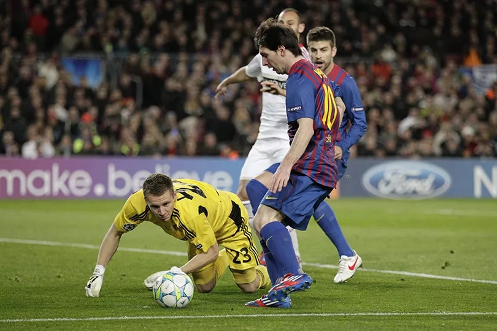
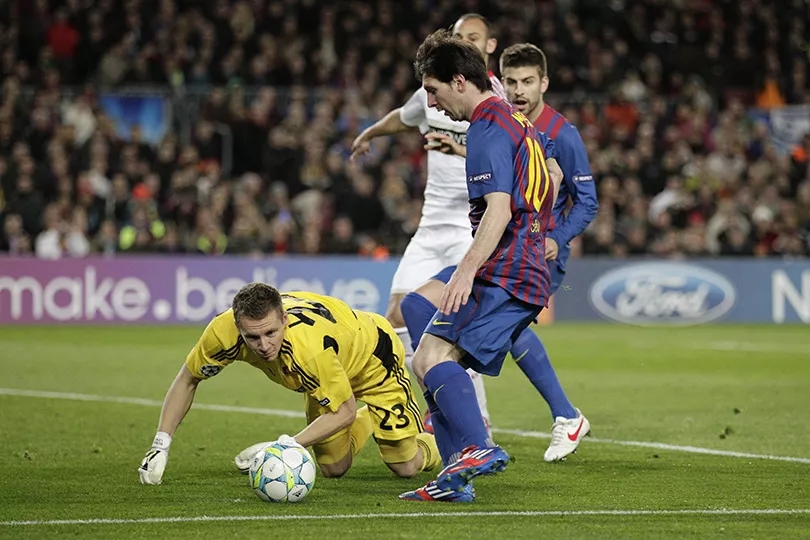

Messi's story
Lionel Messi's story is not one of overcoming adversity, rather it is one of thriving.
He has accomplished more in his career than almost any other footballer in history can dream of.
From seasons of six trophies and 91 goals to lifting four consecutive (7 in total) Ballon d'Or awards, Messi has done it all.
Messi's career is near its spactacular end, and at this point, he doesn't have much more to prove.
The Argentine may have dreams of winning more trophies at Barcelona, and even more personal awards are sure to come. And we cannot forget that World Cup trophy which has eluded him for so long, has finally rested in his hands.
Messi may go down as the greatest footballer of all time, and for some he already is. The little boy from Rosario is the face of football for the past 2 decades, and the game has become even better because of him.
Messi's story
Lionel Messi's story is not one of overcoming adversity, rather it is one of thriving.
He has accomplished more in his career than almost any other footballer in history can dream of.

 
